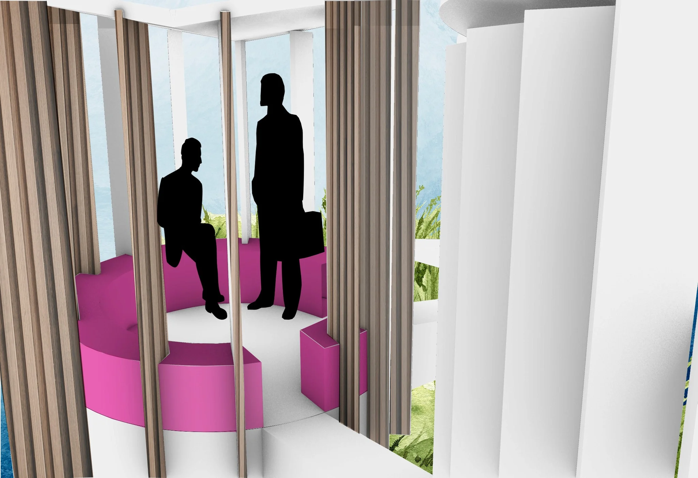
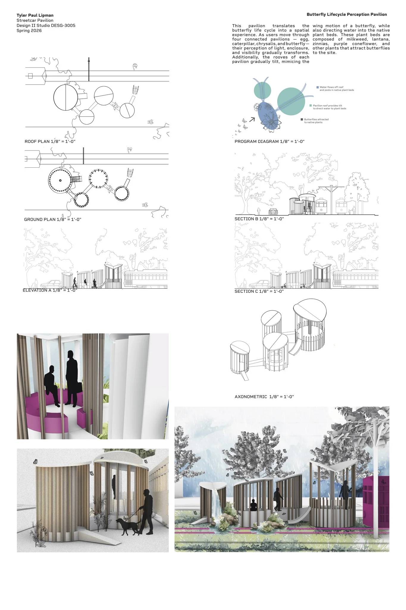
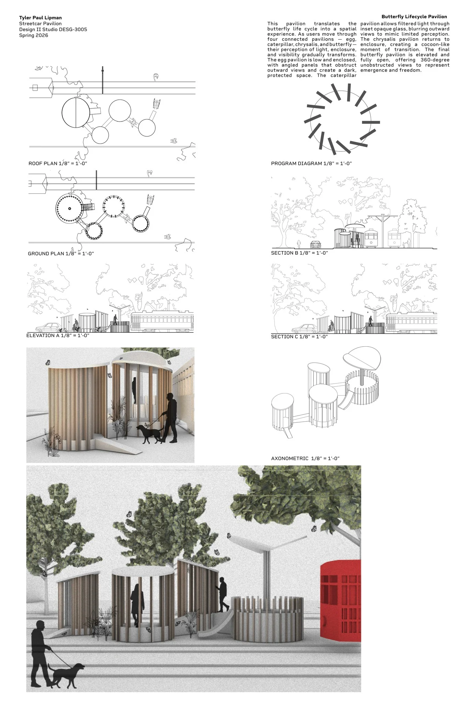
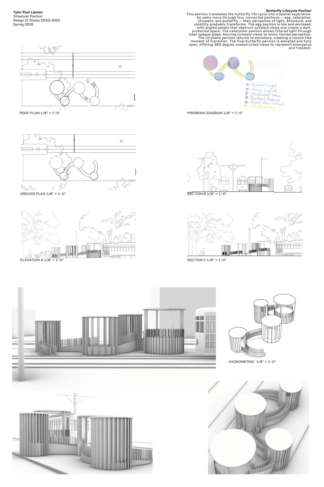

Butterfly Streetcar Pavilion
Four connected shelters exploring enclosure, visibility, and elevation.
- Year
- 2025
- Duration
- 5 weeks
- Context
- Studio II · Design proposal
- Tools
- Rhino 3D · Adobe Suite

Shelter as
an experience.
This streetcar pavilion proposal translates the butterfly lifecycle into four connected spatial experiences: egg, caterpillar, chrysalis, and butterfly. Changes in enclosure, light, visibility, and elevation create a sequence that moves from protection toward openness.
The studio brief called for an urban shelter that provides weather protection, accommodates different users and postures, and creates a sense of place. The proposal connects seating, shelter, circulation, and planting.
Four stages
of openness.
01 — Egg
A low, compressed shelter limits outward views and emphasizes enclosure.
02 — Caterpillar
Layered vertical elements filter views, creating a fragmented relationship to the surroundings.
03 — Chrysalis
Controlled light and tighter boundaries create a more enclosed, inward-looking space.
04 — Butterfly
The most open and elevated stage offers broader views and completes the movement toward release.
A connected
spatial proposal.
The project drawings bring together the lifecycle concept, circulation, and the individual pavilion forms. Native planting reinforces the ecological narrative and connects the sequence to its surroundings.







